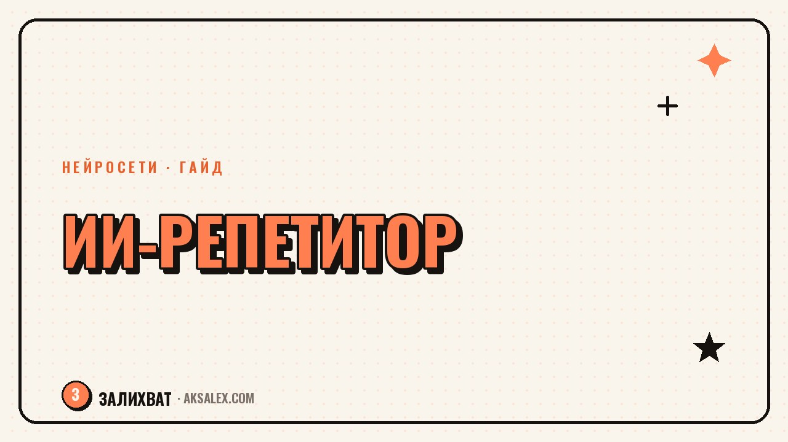

ИИ вместо репетитора: как учить язык с нейросетью

Репетитор стоит денег и занят по расписанию, а язык хочется практиковать каждый день понемногу. Нейросеть в этом смысле удобнее: она под рукой в любое время и не считает глупым вопрос, который ты уже задавал три раза. Но у неё есть и слабые места - живая интонация, культурный контекст, честная обратная связь по акценту. Разберём, где нейросеть реально заменяет часть занятий с репетитором, а где без человека не обойтись.
Что нейросеть делает лучше, чем ожидаешь
Главный плюс - доступность в любой момент. Появилась свободная минута в очереди или в метро - можно открыть чат и поговорить на языке пять минут, вместо того чтобы ждать следующего урока по расписанию. Для наработки словарного запаса и разговорной беглости регулярность важнее длительности одного занятия, а именно регулярность нейросеть и обеспечивает.
Второй сильный момент - терпение без границ. Можно попросить объяснить одно и то же грамматическое правило десятью разными способами, и нейросеть ни разу не покажет раздражения. С живым репетитором такое повторение часто неловко просить, особенно если платишь за час и жалко тратить время на «то же самое ещё раз».
Нейросеть не заменяет репетитора целиком - она берёт на себя рутину: повторение, проверку, объяснение правил. А человеку остаётся то, что действительно требует человека: живой разговор, интонация, обратная связь по ощущению языка.
Разговорная практика: как это выглядит на практике
Голосовой режим
У большинства современных чат-ботов есть голосовой режим, и это меняет всё - можно вести диалог вслух, а не печатать. Попроси нейросеть сыграть роль: заказ кофе в кафе, собеседование на работу, разговор с соседом о погоде. Такие ролевые сценарии тренируют именно то, что нужно в реальной жизни - быструю реакцию на неожиданную фразу собеседника.
Работа над ошибками без стеснения
Многие взрослые стесняются ошибаться перед живым человеком, и это тормозит прогресс - человек начинает говорить реже, чтобы не показаться глупым. Перед нейросетью такого стеснения обычно нет, а значит, говорить получается больше и свободнее. Это особенно заметно на начальных уровнях, где ошибок много и стыд за них может отбить желание практиковаться вообще.
Грамматика и письмо: где нейросеть особенно сильна
Если правило непонятно из учебника, нейросеть объяснит его через примеры из твоей же жизни - подставит твою профессию, твой город, твоих знакомых в примеры предложений, и правило внезапно становится понятнее. Учебники так не умеют, они работают с одними и теми же абстрактными примерами для всех.
С письмом ещё удобнее: можно написать текст самостоятельно, а потом попросить нейросеть отметить ошибки и объяснить, почему это ошибка, а не просто исправить. Разница принципиальная - если просто получить исправленный вариант, ничему не научишься, а если получить объяснение к каждой правке, в следующий раз та же ошибка не повторится.
- Попроси объяснить правило на трёх твоих собственных примерах
- Пиши короткие тексты и проси разбор ошибок с объяснением, а не готовое исправление
- Загружай фото страницы учебника, если формулировка правила непонятна
- Проси подборку из 10 слов по теме, которая тебе актуальна прямо сейчас
Где нейросеть пока проигрывает живому репетитору
Акцент и произношение - самое слабое место. Нейросеть может оценить транскрипцию слова и подсказать в общих чертах, но услышать нюанс интонации, характерный для конкретного региона или диалекта, ей сложно. Живой носитель или опытный репетитор слышит это мгновенно и может точечно поправить именно твою проблему.
Второй момент - культурный контекст и живые реакции. Шутки, идиомы, тонкости вежливости в разных ситуациях - всё это нейросеть объясняет по книжному, а не по тому, как реально говорят сейчас в конкретной стране или городе. Репетитор, который живёт этим языком, передаёт такие вещи из личного опыта, а не из усреднённых данных.
Сравнение сервисов для изучения языка с ИИ
Разные инструменты решают разные задачи, и часто есть смысл комбинировать два-три из них, а не искать один идеальный.
| Сервис | Для чего лучше всего | Минус |
|---|---|---|
| ChatGPT (голосовой режим) | Свободный разговор на любую тему, ролевые сценарии | Не специализирован именно на языках, нужно формулировать задачу самому |
| Duolingo Max | Структурированные уроки с ИИ-объяснением ошибок | Меньше свободы, чем в открытом диалоге с чат-ботом |
| ElsaSpeak | Разбор произношения и акцента по звукам | Заточен только под английский |
| Google Translate (разговорник) | Быстрый перевод и озвучка в моменте | Не подходит для системного изучения, только для разовых ситуаций |
Как выстроить занятия так, чтобы был реальный прогресс
Хаотичное «поболтал с ботом когда вспомнил» работает хуже, чем короткая, но регулярная система. Рабочая схема: 10-15 минут разговорной практики каждый день плюс один раз в неделю более длинное занятие с разбором письма и грамматики.
Если бюджет позволяет, оптимальная связка - нейросеть для ежедневной практики плюс один живой репетитор раз в одну-две недели для контроля произношения и живого разговора. Так закрываются сразу обе стороны: и регулярность, которую даёт ИИ, и качество обратной связи, которое пока даёт только человек.
Частые вопросы
Можно ли выучить язык только с нейросетью, без репетитора?
До уровня уверенного бытового общения - вполне реально, особенно если заниматься регулярно и использовать голосовой режим. Но для тонкой работы над произношением и живой разговорной практикой желательно хотя бы иногда общаться с человеком.
Какая нейросеть лучше всего подходит для разговорной практики?
Чат-боты с голосовым режимом, такие как ChatGPT, дают максимум свободы для диалога на любую тему. Для структурированных уроков с постепенным усложнением удобнее специализированные приложения вроде Duolingo.
Как нейросеть помогает с произношением?
Она может подсказать правильную транскрипцию и объяснить артикуляцию звука в общих чертах, но точно услышать твой конкретный акцент ей сложно. Для детальной работы над произношением лучше использовать специализированные приложения по распознаванию речи.
Сколько времени в день нужно заниматься с ИИ, чтобы был результат?
Даже 10-15 минут ежедневной разговорной практики дают заметный эффект за пару месяцев, если заниматься без длинных перерывов. Регулярность здесь важнее продолжительности одного занятия.
Стоит ли бояться, что нейросеть научит неправильному языку?
Крупные современные модели в целом дают грамматически корректную речь, но иногда выбирают книжные или устаревшие формулировки вместо живых разговорных. Полезно время от времени сверяться с носителями языка или актуальным контентом на этом языке.
Раз тема оказалась полезной, вот что почитать следующим. Нейросеть решит домашку за пять секунд. Вопрос в другом - как сделать, чтобы ребёнок при этом чему-то научился.
Читать статью →а не вручную